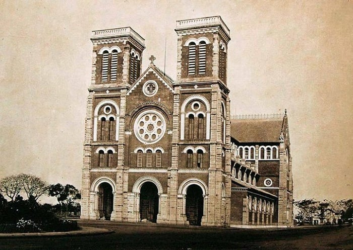
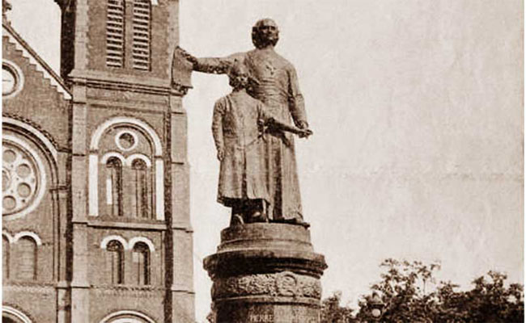
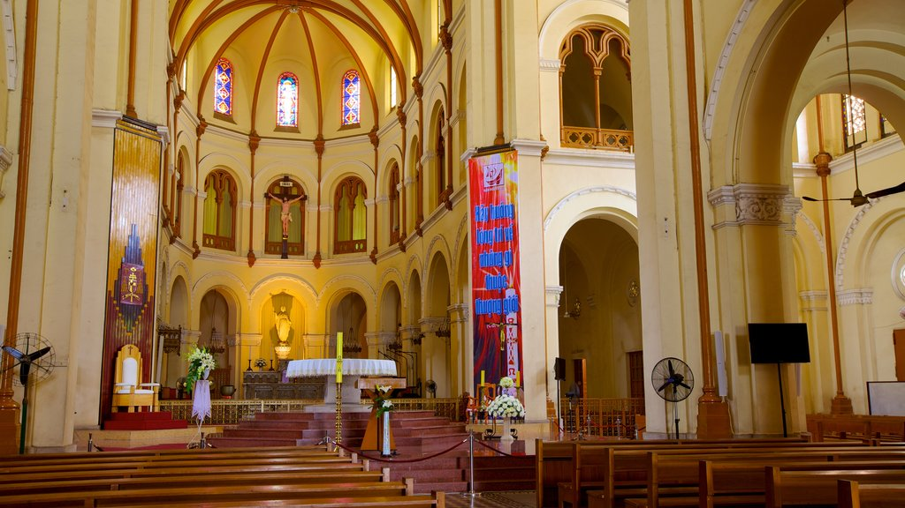

.jpg)
Cũng nằm ngay trung tâm quận 1, Nhà Thờ Đức Bà là địa điểm du lịch thành phố Hồ Chí Minh mà bạn nhất định phải ghé đến. Nhà thờ Đức Bà là một công trình kiến trúc độc đáo mang đậm phong cách Châu Âu, là nơi sinh hoạt và tổ chức các buổi Thánh lễ cho những người theo đạo Công giáo ở Sài Thành.
Ngôi nhà thờ được xây dựng theo phong cách kiến trúc Gothic Pháp, với những đường nét hoa văn tinh tế, mang đậm chất châu Âu. Với tổng chiều dài 91m, chiều rộng 35,5m và vòm mái chính cao tới 21m, cùng hai tháp chuông cao gần 57m bên cạnh, ngôi nhà thờ này là một tuyệt tác kiến trúc đầy ấn tượng. Nơi đây không chỉ là điểm đến du lịch hấp dẫn, mà còn là biểu tượng quan trọng của tôn giáo và văn hóa trong thành phố. Ngôi nhà thờ là nơi diễn ra nhiều hoạt động tôn giáo của cộng đồng Công giáo, cũng như là địa điểm tổ chức các sự kiện văn hóa quan trọng của thành phố.
Vào năm 1863, khi Pháp chiếm đóng Sài Gòn, Đô đốc Bonard đã cho xây dựng một ngôi nhà thờ bằng gỗ nhỏ tại vị trí hiện tại của nhà thờ Đức Bà. Tuy nhiên, ngôi nhà thờ này không đáp ứng được nhu cầu của người dân, do đó vào năm 1877, công trình xây dựng nhà thờ Đức Bà đã được khởi công. Kiến trúc sư JBourad đã thiết kế ngôi nhà thờ theo phong cách kiến trúc Gothic Pháp, với những đường nét hoa văn tinh tế và sang trọng, mang đậm chất châu Âu. Ngôi nhà thờ được xây dựng từ gạch đỏ và đá hoa cương, với tổng kinh phí lên đến 2.500.000 franc Pháp.

Sau đó, công trình đã được đổi tên thành nhà thờ Đức Bà và chính thức mang tên Vương Cung Thánh đường Chính tòa Đức Mẹ Vô nhiễm Nguyên tội Immaculate Conception Cathedral Basilica từ năm 1962. Sau 3 năm xây dựng, ngày 11 tháng 4 năm 1880, nhà thờ Đức Bà đã được khánh thành. Từ đó, đây đã trở thành một trong những biểu tượng quan trọng của thành phố Hồ Chí Minh, thu hút sự quan tâm của nhiều du khách trong và ngoài nước đến tham quan.
Năm 1903, người Pháp đã cho đúc bức tượng đồng Pigneau de Béhaine, một nhà truyền giáo người Pháp đã có công trong việc giúp đỡ vua Gia Long xây dựng nhà Nguyễn. Bức tượng cao 3,4 mét, nặng 10 tấn, được đặt trên một bệ đá hoa cương. Bức tượng Pigneau de Béhaine là một biểu tượng của sự hòa hợp giữa Công giáo và triều Nguyễn. Nhân vật chính trong bức tượng là Pigneau de Béhaine, đang dẫn theo một cậu bé, đó là hoàng tử Nguyễn Phúc Cảnh, con trai của vua Gia Long. Hình ảnh này thể hiện mối quan hệ thân thiết giữa nhà Nguyễn và người Pháp, cũng như sự ủng hộ của người Pháp đối với nhà Nguyễn. Thế nhưng, bức tượng này đã bị phá bỏ vào năm 1945, trong thời kỳ kháng chiến chống Pháp. Chỉ còn lại bệ đá hoa cương, trở thành một di tích lịch sử của thành phố Hồ Chí Minh.

Sau khi bức tượng Pigneau de Béhaine bị phá hủy, bệ đá hoa cương vẫn được bảo tồn. Vào năm 1958, linh mục Giuse Phạm Văn Thiên đã đặt nhà điêu khắc G. Ciocchetti để tạo ra tượng Đức Mẹ Hòa Bình và đặt nó lên bệ đá hoa cương này. Tượng Đức Mẹ Hòa Bình được chế tác từ đá cẩm thạch trắng của Ý, có chiều cao 4,6 mét và nặng 8 tấn. Tượng hiện thể hiện Đức Mẹ đang đứng thẳng, tay trái cầm quả địa cầu, trên đó có cây thánh giá. Ánh mắt của Đức Mẹ hướng lên trời, như thể cầu nguyện cho hòa bình cho người dân Việt Nam. Tượng Đức Mẹ Hòa Bình là biểu tượng của sự hòa bình và được nhiều người dân và du khách yêu thích. Nó được đặt ở vị trí trang trọng, trước nhà thờ Đức Bà, trở thành một điểm tham quan nổi tiếng của thành phố Hồ Chí Minh.
Sau khi bức tượng Pigneau de Béhaine bị phá hủy, bệ đá hoa cương vẫn được bảo tồn. Vào năm 1958, linh mục Giuse Phạm Văn Thiên đã đặt nhà điêu khắc G. Ciocchetti để tạo ra tượng Đức Mẹ Hòa Bình và đặt nó lên bệ đá hoa cương này. Tượng Đức Mẹ Hòa Bình được chế tác từ đá cẩm thạch trắng của Ý, có chiều cao 4,6 mét và nặng 8 tấn. Tượng hiện thể hiện Đức Mẹ đang đứng thẳng, tay trái cầm quả địa cầu, trên đó có cây thánh giá. Ánh mắt của Đức Mẹ hướng lên trời, như thể cầu nguyện cho hòa bình cho người dân Việt Nam. Tượng Đức Mẹ Hòa Bình là biểu tượng của sự hòa bình và được nhiều người dân và du khách yêu thích. Nó được đặt ở vị trí trang trọng, trước nhà thờ Đức Bà, trở thành một điểm tham quan nổi tiếng của thành phố Hồ Chí Minh.
